Capitolo 5
Esperimento di Rutherford
L’esperimento di questa scheda ci permetterà di scoprire un’importante caratteristica della struttura atomica. Vedremo che il volume occupato da un atomo è quasi tutto spazio vuoto! Ad esempio in un cristallo (fig. 1) il volume occupato da un atomo può essere misurato in vari modi (vedi scheda sui raggi X per un esempio), ed il risultato è un diametro dell’ordine di 1Å (1 Angstrom ( 10(10m), ma questo volume è praticamente vuoto e solo una piccolissima parte centrale è occupata da materia. La particella che occupa questo centro viene chiamata nucleo e contiene quasi tutta la massa dell’atomo. La parte “vuota” è lo spazio nel quale si muovono gli elettroni dell’atomo, che, a secondo del tipo di nucleo, possono essere da uno a poco più di cento.
Nella parte finale della scheda mostreremo un metodo che ci permetterà di determinare la carica positiva contenuta nel nucleo; in questo modo misureremo indirettamente anche il numero di elettroni appartenenti all’atomo.
Prima di descrivere l’esperimento ci conviene spendere un po’ di righe per introdurre i fenomeni di radioattività e descrivere le particelle (. In futuro dedicheremo una scheda alla radioattività, quindi ora vogliamo chiarire solo il minimo indispensabile per capire l’esperimento.
Radioattività e radiazioni (.
Alcuni materiali emettono spontaneamente vari tipi di particelle ad alta energia, senza essere in alcun modo stimolati dall’esterno. Questi materiali vengono detti radioattivi ed i fasci di particelle emesse vengono chiamati radiazioni.
Le radiazioni possono essere osservate con vari tipi di rilevatori, più o meno complicati, che descriveremo nella scheda sulla radioattività. I rilevatori più sofisticati permettono di distinguere anche il tipo di particelle e di determinarne le caratteristiche fisiche.
Le particelle che si usano nell’esperimento di Rutherford sono chiamate particelle (, hanno una massa praticamente pari a quella dell’atomo di elio ed hanno una carica elettrica pari al doppio di quella dell’elettrone. In sostanza una particella ( è un nucleo di un atomo di elio.
La velocità di emissione delle particelle ( dipende dal materiale radioattivo usato, e può essere misurata con esperimenti di deflessione in campi elettrici e magnetici simili a quelli descritti nella terza scheda.
Descrizione dell’apparato sperimentale.
La figura 2 mostra uno schema dell’apparato.
Abbiamo un preparato radioattivo chiamato Am241 che emette particelle (. Il fascio viene collimato mediante una fenditura, dopo di che incide su una sottile lamina d’oro dello spessore di 2(m; le particelle attraversano la lamina e vengono diffuse. Infine abbiamo un rilevatore che può essere posizionato a diversi angoli ( e che misura la distribuzione delle particelle diffuse.
L’esperimento viene eseguito sotto vuoto (pressione <1mBar =100Pa) per permettere alle particelle ( di percorrere il loro cammino senza urtare contro le molecole dell’aria.
La figura 3 è una foto del preparato radioattivo, l’Am241 è disposto sulla testa di un supporto metallico e viene conservato in un contenitore di vetro per motivi di sicurezza.
La figura 4 mostra la lamina d’oro dello spessore di 2(m montata su un supporto di plastica, si vedono anche due fenditure di collimazione, quella dietro a sinistra è larga 1mm, mentre l’altra davanti a destra è di 5mm.
Il sistema di rilevazione è formato da un detector al silicio collegato ad un amplificatore di misura, la foto di figura 5 mostra il detector e l’amplificatore.
Il detector è formato da un bipolo di silicio con una sua resistenza elettrica, quando la superficie sensibile viene colpita da una particella ( con sufficiente energia, la resistenza elettrica si abbassa per un istante e poi risale al valore originale (fig. 6), il meccanismo di questo fenomeno sarà descritto approfonditamente in una scheda dedicata ai materiali semiconduttori quindi per ora non ce ne preoccupiamo. L’amplificatore di misura “sente” la variazione di resistenza ed amplifica il segnale generando un impulso amplificato con la stessa forma di quello ricevuto in ingresso. La foto di figura 7 mostra l’amplificatore dal lato dei morsetti di uscita, dal morsetto di sinistra si può prelevare l’impulso amplificato con la forma originale, dal morsetto di destra invece si ottiene un impulso squadrato costruito come mostra la figura 8; il livello della tensione U può essere regolato con una manopola che si trova sulla parte superiore dell’amplificatore. L’impulso squadrato viene portato ad un contatore digitale che contando il numero di impulsi conta il numero di particelle ( che arrivano al detector. La figura 9 mostra una foto dell’intero apparato sperimentale, il cilindro a sinistra è la camera nella quale sono contenuti il preparato radioattivo, la lamina d’oro ed il sensore di rilevazione. La camera è collegata ad una pompa alternativa che permette di ottenere il vuoto, inoltre dalla camera parte il cavetto che collega il sensore all’amplificatore raffigurato al centro, il quale a sua volta è collegato al contatore digitale che si vede a destra. L’amplificatore è alimentato da un alimentatore a corrente continua da 10V che si vede al centro dietro l’amplificatore stesso.
Nella foto di figura 10 si vede la camera aperta con tutti i componenti, il preparato radioattivo, il sensore e la lamina d’oro che è già montata sul suo supporto; la figure 11 mostra la camera chiusa.
Nello schema iniziale (fig. 2) abbiamo visto che il preparato radioattivo e la lamina d’oro erano fissi mentre il detector poteva ruotare, invece nel nostro sistema è il contrario, il detector è fissato alla parete del cilindro, mentre la lamina d’oro ed il preparato radioattivo sono montati su un supporto rotante, ovviamente le due soluzioni sono equivalenti. Nella figura 11 la manopola a destra serve a ruotare un supporto che nel nostro esperimento non viene utilizzato, mentre la manopola al centro è quella che ci permette di ruotare il supporto del preparato radioattivo e della lamina d’oro.
Esecuzione dell’esperimento e risultati sperimentali.
Prima di tutto si deve aprire il cilindro e si devono disporre i vari elementi, il preparato radioattivo, la fenditura, la lamina d’oro ed il detector. Si può scegliere la fenditura di 1mm oppure quella di 5mm, nel primo caso si ottengono misure più precise, nel secondo si ottengono misure più veloci.
Se il cilindro è sotto vuoto bisogna prima far entrare l’aria aprendo l’apposito rubinetto e poi si potrà togliere il coperchio. Se la lamina d’oro è già montata all’interno del cilindro bisogna stare attenti a non fare entrare l’aria in modo troppo brusco, altrimenti la lamina si potrebbe strappare a causa delle violente variazioni di pressione.
Dopo aver disposto tutti gli elementi si chiude il cilindro e si accende la pompa per circa cinque minuti, nel frattempo si collega il detector all’amplificatore e l’amplificatore al contatore digitale, inoltre si alimenta l’amplificatore con un generatore da 10V in continua.
Dopo aver spento la pompa si accendono il contatore e l’amplificatore, e si regola la tensione di soglia U (fig. 8) a circa 0,5V con la apposita manopola disposta sull’amplificatore.
A questo punto si possono eseguire le misure. Si fissa l’angolo ( di rilevazione con la manopola posta sul tappo del cilindro, si azzera il contatore e si fanno partire contemporaneamente il contatore ed un cronometro tascabile. Dopo qualche minuto, quando si saranno contati un numero sufficiente di impulsi, si fermano contemporaneamente il contatore ed il cronometro; su una tabella si segnano l’angolo (, il numero di impulsi contati ed il tempo di rilevazione. Si consiglia di contare almeno una ventina di impulsi per ridurre l’errore statistico.
La tabella qui sotto mostra una serie di misure effettuate con la fenditura da 1mm, nella quarta colonna si è riportato il numero di impulsi per unità di tempo  . La figura 12 riporta
. La figura 12 riporta  in funzione di (, si osserva che la curva è spostata a sinistra di circa 1,2( il che vuol dire semplicemente che non era collimata perfettamente la direzione del fascio con lo zero del goniometro.
in funzione di (, si osserva che la curva è spostata a sinistra di circa 1,2( il che vuol dire semplicemente che non era collimata perfettamente la direzione del fascio con lo zero del goniometro.
( (gradi) N (t (sec)
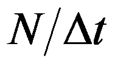
0 3059 120 25,5 2,5 1736 120 14,5 5 868 120 7,23 10 84 120 0,7 15 20 125 0,16 20 20 333 0,06 25 20 526 0,038 30 20 1000 0,02 -1,2 3201 120 26,7 -2,5 3089 120 25,7 -5 1796 120 15 -7,5 873 120 7,27 -10 268 120 2,23 -15 50 120 0,417 -20 20 200 0,1 -25 20 286 0,0699 -30 20 1053 0,019Interpretazione dei risultati.
Sapendo che la lamina d’oro è spessa 2(m e sapendo che un atomo d’oro ha un diametro di circa 1Å = 10–4(m possiamo calcolare che la lamina è spessa circa ventimila atomi. Inoltre sappiamo che un atomo d’oro è circa venti volte più pesante di una particella (.
In base a queste informazioni se supponiamo che gli atomi sono come delle sferette piene e proviamo ad immaginare l’urto tra una particella ( e la lamina d’oro (Fig. 13)
non riusciamo a capire come sia possibile che la particella attraversi la lamina. In queste condizioni la radiazione dovrebbe essere bloccata, ed invece sperimentalmente si è osservato che quasi tutte le particelle attraversano il muro con una deflessione piuttosto piccola (<10().
I risultati sperimentali si possono spiegare pensando che l’atomo sia strutturato più o meno come un piccolo sistema planetario, con una nucleo molto pesante e molto piccolo situato al centro, e con un insieme di elettroni che si muovono in uno spazio orbitale simile ad una nuvola. Nella prossima scheda studieremo un tale sistema con l’equazione di Schrödinger e mostreremo come sia possibile che si mantenga in equilibrio. Ora ci soffermiamo ad osservare come questa ipotesi sia in accordo con i risultati sperimentali.
Prima di tutto, in base al modello atomico che abbiamo ipotizzato, possiamo capire perché la lamina d’oro è così trasparente ai raggi ( (fig. 14); infatti essendo le dimensioni nucleari molto piccole, anche se ci sono ventimila nuclei in fila, è molto improbabile che si abbia un urto frontale.
Nell’ultimo paragrafo calcoleremo la distribuzione di probabilità per l’angolo di diffusione (, usando l’equazione di Schrödinger ed il modello atomico planetario, e mostreremo che è in accordo con i nostri risultati sperimentali; Prima però dobbiamo generalizzare l’equazione di Schrödinger al caso tridimensionale e dobbiamo analizzarne alcuni interessanti sviluppi di carattere teorico.
Equazione di Schrödinger in tre dimensioni e flusso di probabilità.
L’equazione di Schrödinger in tre dimensioni può essere ottenuta ripercorrendo esattamente gli stessi passi che abbiamo percorso per ottenere quella in una dimensione, con l’unica noia di dover usare un formalismo un po’ più pesante. Il risultato è formalmente analogo:
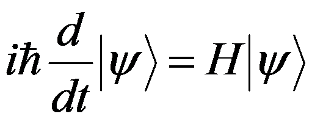
con
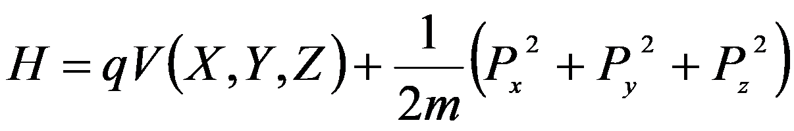
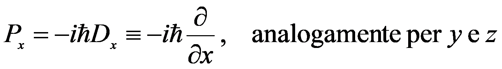
e
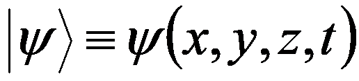
L’operatore
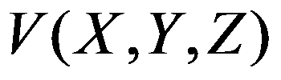
si definisce in base alla formula di Taylor per le funzioni di più variabili ed in pratica si ha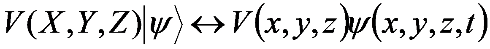
.La funzione  è un vettore in “
è un vettore in “
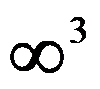
dimensioni” che dipende dal tempo. Abbiamo infatti tre indici che corrispondono a tre grandezze osservabili cioè le tre coordinate che individuano la posizione della particella. Quindi si può dire che la funzione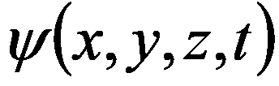
è la distribuzione di ampiezze di probabilità per la terna di variabili aleatorie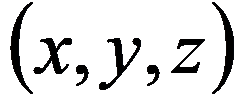
, la dipendenza dal tempo indica che la distribuzione può variare con il tempo. Se vogliamo calcolare la distribuzione di probabilità dobbiamo prendere i moduli quadrati: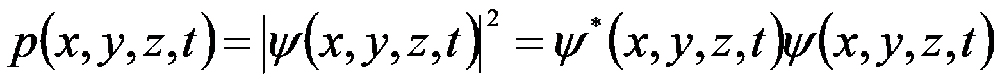
Ad esempio se consideriamo un volume ( e vogliamo determinare la probabilità che la particella venga trovata nel volume ( allora dobbiamo calcolare l’integrale:
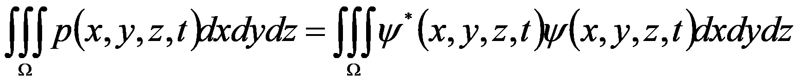
In generale quando abbiamo una distribuzione di una certa grandezza fisica, ad esempio la massa oppure la carica, abbiamo anche il vettore densità di flusso della stessa grandezza fisica, ad esempio il vettore densità di flusso di massa oppure il vettore densità di flusso di carica. Nel nostro caso abbiamo distribuzione di probabilità che possiamo, e ci aspettiamo che possa essere definito il vettore densità di flusso di probabilità in modo che valga un equazione di continuità simile a quella valida per qualsiasi altra grandezza fisica:
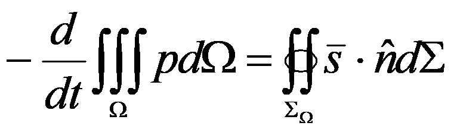
Cioè la diminuzione della probabilità contenuta in ( è pari al flusso uscente del vettore densità di flusso di probabilità  attraverso la superficie
attraverso la superficie
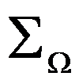
che delimita il volume (.Come è noto questa equazione può essere scritta anche in forma differenziale:
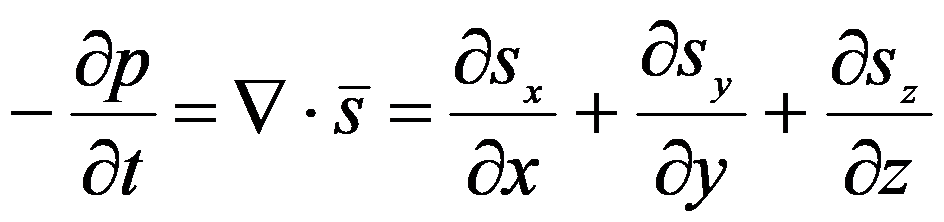
Ora in base all’equazione di Schrödinger e all’equazione di continuità cerchiamo di trovare una formula esplicita per  :
:
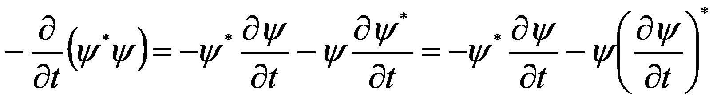
In base all’equazione di Schrödinger possiamo scrivere
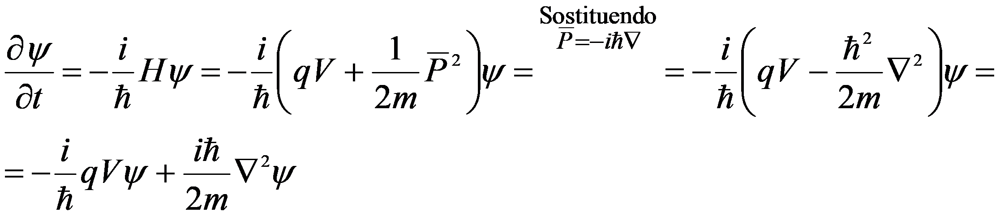
Sostituendo abbiamo
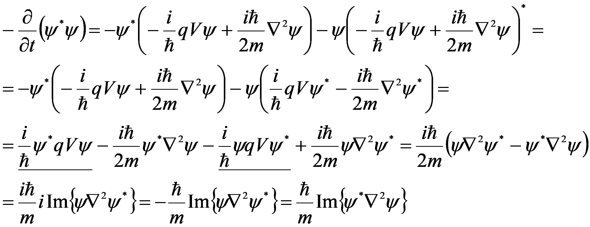
Per la regola della derivata del prodotto possiamo scrivere
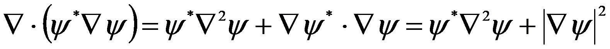
Prendendo la parte immaginaria di entrambi i membri abbiamo l’uguaglianza
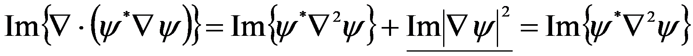
Sostituendo il termine nella formula per
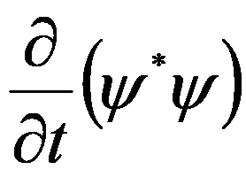
abbiamo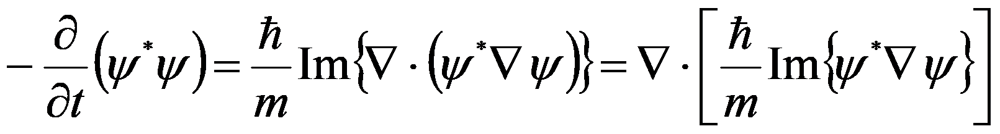
Confrontando quest’ultima con l’equazione di continuità in forma locale
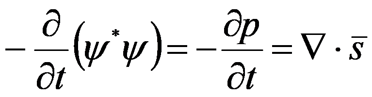
possiamo estrapolare una possibile formula per :
:
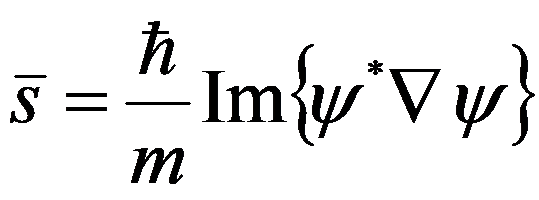
Per meglio comprendere il significato analitico di questa formula proviamo ad esprimere la funzione complessa  in termini di modulo e fase:
in termini di modulo e fase:
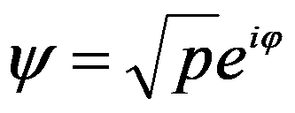
. Sostituendo nella formula per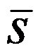
si ha: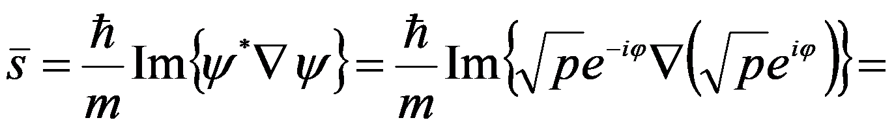
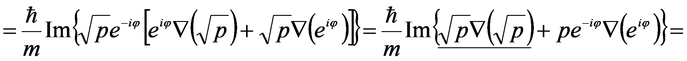
Il termine sottolineato si semplifica perché è reale puro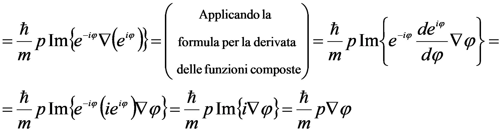
Dunque possiamo scrivere
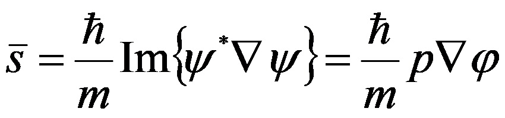
Quest’ultima formula ci mostra che, il vettore densità di flusso di probabilità in un determinato punto, è proporzionale alla densità di probabilità in questo punto e al gradiente della fase della distribuzione di ampiezze di probabilità.
Formula di diffusione di Rutherford.
Consideriamo una particella ( che incide contro una lamina d’oro, e supponiamo di voler determinare la distribuzione di probabilità
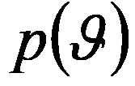
che la particella venga deflessa sotto un angolo (.Prima di tutto osserviamo che non ci potranno essere fenomeni di diffrazione, perché la lunghezza d’onda associata ad una particella ( è molto minore della distanza interatomica del reticolo cristallino dell’oro, infatti:
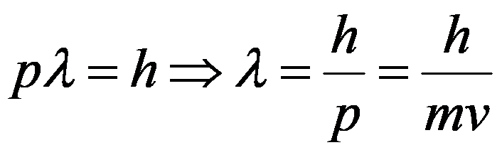
sostituendo i valori , e (la velocità dei raggi ( sarà misurata nella scheda sulle radiazioni)
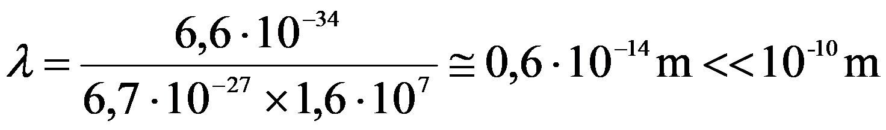
Per impostare il problema di diffusione con l’equazione di Schrödinger dovremmo specificare il “pacchetto d’onda” iniziale, cioè la distribuzione di ampiezze di probabilità iniziale
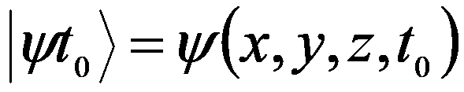
, ed inoltre dovremmo specificare il potenziale elettrico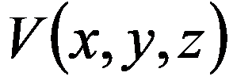
presente all’interno della lamina d’oro.Osserviamo che già a questo punto abbiamo fatto una notevole semplificazione, infatti la lamina d’oro è un sistema complesso costituito da un aggregato di nuclei d’oro e di elettroni. Nonostante questa semplificazione il problema resta ancora molto complicato e dobbiamo trovare una strategia per raggirarlo.
Sperimentalmente abbiamo visto che quasi tutte le particelle subiscono piccole deflessioni (per intenderci minori di 15(), mentre solo una piccola percentuale subisce deflessioni maggiori. Questo significa che è molto improbabile che si abbia un “urto ravvicinato”, cioè è molto improbabile che il pacchetto d’onda passi sufficientemente vicino ad un nucleo da essere deflesso di un angolo maggiore di 15(.
Possiamo concludere che, se è improbabile che ci sia un urto con un angolo di deflessione maggiore di 15(, allora è ancora più improbabile che ci siano due urti consecutivi entrambi con un angolo maggiore di 15(. Quindi possiamo supporre che le particelle deflesse sotto grandi angoli subiscono un solo urto durante l’attraversamento della lamina d’oro. Più correttamente possiamo dire che subiscono un solo urto di entità rilevante, più tanti piccoli urti con effetto medio nullo.
In base alla precedente ipotesi noi studieremo la diffusione dovuta ad un solo atomo, e faremo il confronto tra i risultati teorici e quelli sperimentali solo per grandi angoli.
Per impostare il problema ci rimane da definire il pacchetto d’onda iniziale. La condizione più semplice è quella di ipotizzare che dalla direzione  provenga un onda piana del tipo
provenga un onda piana del tipo
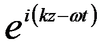
. Dopo aver determinato la soluzione in questo caso particolare, potremo usare la linearità dell’equazione di Schrödinger e costruire altre soluzioni sovrapponendo quelle già trovate. In particolare, scegliendo opportunamente la sovrapposizione, potremo ottenere la soluzione relativa a qualsiasi pacchetto iniziale, infatti il teorema di Fourier ci garantisce che qualsiasi funzione complessa può essere ottenuta come sovrapposizione di funzioni del tipo , ed .Ora passiamo a fare i conti:
Dobbiamo risolvere l’equazione di Schrödinger con la condizione che
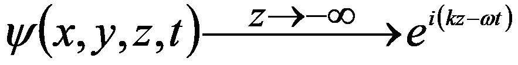
Prima di tutto osserviamo che deve essere
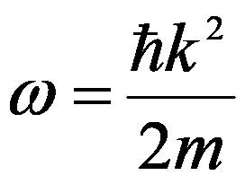
perché la funzione deve soddisfare l’equazione di Schrödinger nello spazio
deve soddisfare l’equazione di Schrödinger nello spazio 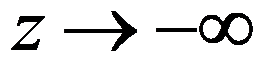
dove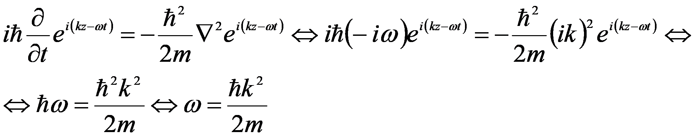
Ora, per risolvere il nostro problema, proviamo a separare le variabili spazio dalle variabili tempo con funzioni del tipo
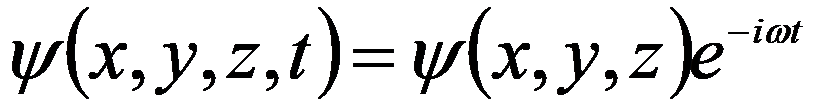
; sostituendo nell’equazione di Schrödinger abbiamo: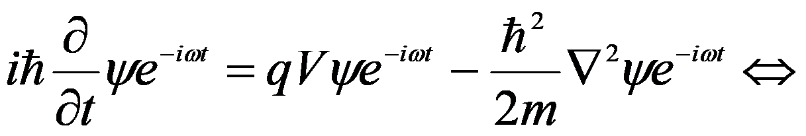
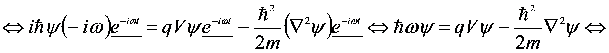
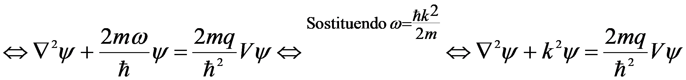
Dunque dobbiamo risolvere il problema:
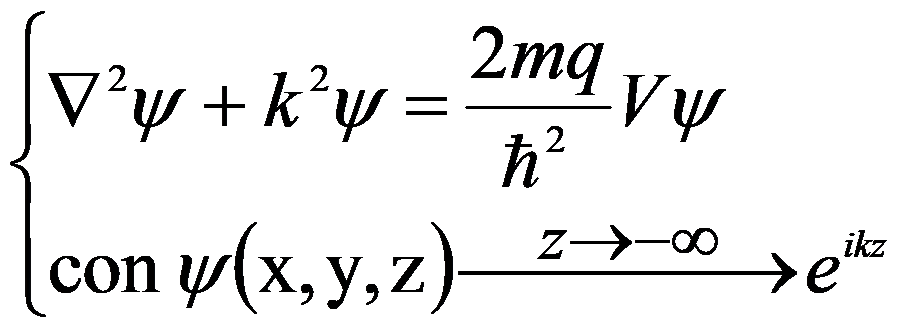
L’equazione di questo problema non può essere risolta in forma analitica, quindi troveremo una soluzione approssimata usando un metodo di tipo iterativo.
Prima scegliamo una funzione
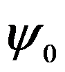
che approssimi bene l’equazione e la condizione al contorno. Poi sostituiamo questa funzione al secondo membro dell’equazione e risolviamo rispetto all’incognita che è rimasta al primo membro: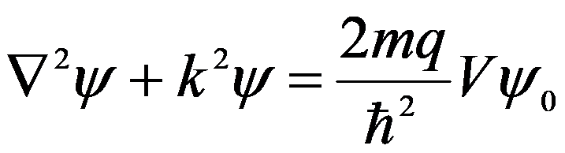
In questo modo troviamo una prima soluzione
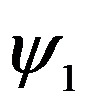
, per procedere sostituiamo al secondo membro e troviamo una seconda soluzione
al secondo membro e troviamo una seconda soluzione 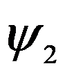
. Si procede iterando questa operazione fino a raggiungere una approssimazione soddisfacente.In realtà noi eseguiamo solo un passo e come funzione iniziale scegliamo
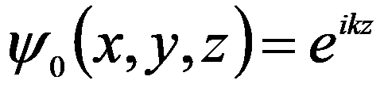
. Quindi abbiamo:La soluzione generale di questo problema è (vedi appendice 1):
Il termine  si annulla lontano dal nucleo, quindi è come se l’integrale fosse esteso ad un intorno limitato; invece i punti in cui ci interessa determinare la soluzione sono molto lontani dall’atomo, quindi possiamo dire che sarà . In base a queste considerazioni possiamo approssimare il termine . Per il denominatore possiamo scrivere ; mentre per l’argomento dell’esponenziale possiamo scrivere (fig. 15).
si annulla lontano dal nucleo, quindi è come se l’integrale fosse esteso ad un intorno limitato; invece i punti in cui ci interessa determinare la soluzione sono molto lontani dall’atomo, quindi possiamo dire che sarà . In base a queste considerazioni possiamo approssimare il termine . Per il denominatore possiamo scrivere ; mentre per l’argomento dell’esponenziale possiamo scrivere (fig. 15).
Inoltre possiamo scrivere .
Sostituendo queste espressioni abbiamo:
Per calcolare l’integrale dobbiamo scegliere un sistema di coordinate; la scelta più intelligente è un sistema di coordinate polari , con l’asse nella direzione . Infatti in questo modo abbiamo , ed essendo possiamo scrivere l’integrale nella forma:
L’integrando non contiene la variabile (, quindi l’integrazione rispetto a ( è banale e da un termine 2(. L’integrazione rispetto ad ( si esegue per sostituzione ponendo , in questo modo abbiamo:
A Questo punto per completare il calcolo dell’integrale dobbiamo introdurre il potenziale . Potremmo inserire dove è la carica del nucleo, ma in questo modo otteniamo un’integrale “oscillante” che non può essere calcolato; questo problema si verifica perché ci siamo messi in una situazione ideale quando abbiamo considerato come pacchetto incidente un’onda piana. Tuttavia questa difficoltà si supera facilmente se si considera ; in questa formula l’esponenziale rappresenta l’effetto schermante dovuto alla carica degli elettroni, ed a è il raggio della “nuvola elettronica”. In realtà l’effetto schermante dovrebbe essere determinato con dei calcoli precisi, ma comunque l’approssimazione esponenziale è molto buona, ed inoltre il risultato non cambia molto se scegliamo altre forme.
Sostituendo la formula per il potenziale abbiamo:
Essendo possiamo trascurare il termine al denominatore ed otteniamo per l’integrale la formula:
Sostituendo nella formula per abbiamo:
A questo punto abbiamo determinato la distribuzione di ampiezze di probabilità, ora dobbiamo interpretarla e calcolare il flusso di probabilità.
In origine avevamo un’onda piana che proveniva dalla direzione , il risultato, come mostra la figura 16, è un onda piana che va verso più un onda sferica divergente che ha un’ampiezza che dipende dall’angolo (.
Nella realtà fisica non avremo un onda piana infinitamente estesa, ma, come mostra la figura 17, avremo un fascio stretto, molto simile ad un onda piana, ma con una dimensione trasversale finita.
In queste condizioni solo l’onda sferica potrà arrivare al detector, quindi è solo l’onda sferica che dobbiamo considerare per calcolare il flusso di probabilità.
Ora passiamo al calcolo del flusso mediante la formula . La fase ( è quella che si trova nel termine ed è , dunque abbiamo .
Sostituendo nella formula per i vari termini abbiamo per il modulo del vettore densità di flusso diffuso:
Per la densità di flusso incidente dovuto all’onda  abbiamo:
abbiamo:
La densità di flusso diffuso per una densità di flusso incidente unitaria è data dal rapporto:
Se moltiplichiamo questo termine per una superficie dS otteniamo il flusso attraverso dS. Se vogliamo calcolare il flusso associato ad un angolo solido d( dobbiamo considerare la superficie sottesa dall’angolo d( che è . Dunque il flusso entrante in d( è:
Se sostituiamo otteniamo la formula di diffusione di Rutherford:

Questa formula ci dà la densità di flusso diffuso per angolo solido, da un singolo atomo, quando il flusso incidente ha densità unitaria.
Confronto tra teoria ed esperienza.
Prima di tutto osserviamo che la formula di Rutherford è divergente per , quindi per angoli piccoli non si può avere nessun accordo sperimentale; questo lo aspettavamo perché abbiamo fatto delle approssimazioni valide solo per angoli abbastanza grandi.
Per quanto riguarda la dipendenza da le figure 18 e 19 riportano il confronto tra i valori ottenuti sperimentalmente ed i valori calcolati con la formula opportunamente scalata; la figura 18 è in scala lineare, mentre la figura 19 è in scala logaritmica; i cerchi rappresentano i punti misurati ed i triangoli rappresentano i punti calcolati.
Come si vede c’è accordo per angoli maggiori di 10(.
Ora vedremo come si può determinare la carica nucleare applicando la formula di Rutherford completa .
Come abbiamo già detto questa formula ci dà la distribuzione del flusso di probabilità, diffuso da un solo atomo e per una densità di flusso incidente unitaria. Per applicarla al nostro caso dobbiamo prima moltiplicarla per la densità di flusso effettiva, e poi moltiplicarla per il numero effettivo di atomi che contribuiscono al processo di diffusione:
Per ottenere il numero di atomi diffusori dobbiamo considerare il volume d’oro investito dal fascio e moltiplicarlo per n il numero di atomi per unità di volume. Il volume d’oro investito dal fascio si può calcolare moltiplicando la sezione trasversale del fascio per lo spessore s della lamina d’oro quindi abbiamo:
Il prodotto della densità del flusso per la sezione del fascio ci dà il flusso incidente totale che indicheremo con F, quindi abbiamo:
Questa formula ci dà il flusso di probabilità per angolo solido. Se vogliamo calcolare il flusso di particelle, dobbiamo considerare che il passaggio di una particella equivale al passaggio di una “unità di probabilità”, cioè quando un unità di probabilità si trasferisce da un luogo ad un altro vuol dire che una particella si è trasferita tra questi due luoghi; quindi la formula che ci dà il flusso di probabilità ci dà anche il flusso di particelle senza dover essere corretta.
Se supponiamo che il detector sottende un angolo solido d(, allora possiamo calcolare il numero di particelle per unità di tempo che vengono rilevate:
Per poter applicare questa formula ci resta da determinare il flusso totale incidente F. Per determinare questa grandezza dobbiamo calcolare l’integrale della distribuzione ottenuta sperimentalmente. L’integrale deve essere calcolato considerando che la curva in realtà rappresenta una superficie, che si ottiene facendo ruotare la curva attorno all’asse delle ordinate; quindi non abbiamo un integrale semplice, ma un integrale doppio. Tuttavia per ottenere una stima grossolana noi faremo il calcolo basandoci sull’approssimazione mostrata in figura 20, cioè approssimeremo la superficie con un cilindro, con un raggio di base di 10( ed un’altezza pari all’altezza massima della superficie, 27 particelle al secondo nell’angolo solido d(.
Quindi per il flusso totale abbiamo:
Per l’angolo solido totale abbiamo (Fig. 21):
quindi:
Sostituendo questo valore di F nella formula per il numero di particelle rilevate per unità di tempo abbiamo:
Per n, il numero di atomi per unità di volume, possiamo fare una stima considerando che un atomo ha un raggio di circa 1Å (), quindi occupa un volume di circa ; dunque abbiamo .
Sostituendo nella formula i seguenti valori:
abbiamo:
A questo punto dobbiamo trovare la carica Q che fa coincidere questa distribuzione teorica con la distribuzione sperimentale; per abbiamo il confronto rappresentato in figura 22.
Quindi la nostra stima per la carica del nucleo dell’oro è di  , corrispondenti a elettroni.
, corrispondenti a elettroni.
Misure più precise portano ad una carica pari a 79 volte quella dell’elettrone.
Noi non abbiamo voluto eseguire una misura molto precisa, il nostro scopo era solo quello di mostrare come è possibile determinare la carica nucleare ed il numero di elettroni contenuti in un atomo.
Appendice 1. Equazione di Helmholtz.
L’equazione che abbiamo incontrato nel testo era del tipo:
con la condizione al che per  .
.
Per risolvere questo problema consideriamo prima l’equazione omogenea con la condizione al contorno effettiva:
Ora risolviamo l’equazione completa con la condizione al contorno “nulla”:
Determiniamo la soluzione quando il termine noto è la funzione di Dirac:
In questo caso la soluzione come verificheremo più avanti è
Utilizzando la linearità dell’equazione, dal fatto che:
possiamo concludere che:
Sommando questa soluzione a quella trovata per l’equazione omogenea con la condizione iniziale effettiva abbiamo la formula applicata nel testo:
Ora verifichiamo che la funzione  soddisfa l’equazione . Eseguiremo la verifica in due passi:
soddisfa l’equazione . Eseguiremo la verifica in due passi:
Prima proviamo che l’equazione è soddisfatta per ogni  :
:
per si ha , quindi dobbiamo verificare che . Per scrivere il laplaciano conviene scegliere un sistema di coordinate sferiche centrate in , in questo modo abbiamo:
sostituendo la formula per il laplaciano e semplificando i termini comuni
Come secondo punto proviamo che vale la proprietà della funzione di Dirac:
Sostituendo abbiamo
scegliendo un sistema di coordinate sferiche centrato in  abbiamo
abbiamo
applicando il teorema della divergenza abbiamo
Eseguiamo prima l’integrale di superfice per una sfera di raggio R
Ora eseguiamo l’integrale di volume per la stessa sfera di raggio R
integrando per parti abbiamo
Sommando i risultati dei due integrali abbiamo
Come volevasi dimostrare.
Appendice 2.
Nel testo abbiamo un integrale del tipo:
Indichiamo l’integrale con il simbolo I. Integreremo due volte per parti ottenendo così un’equazione nell’incognita I:
Dunque abbiamo l’equazione
Questa è la formula applicata nel testo.
Figure e immagini del capitolo